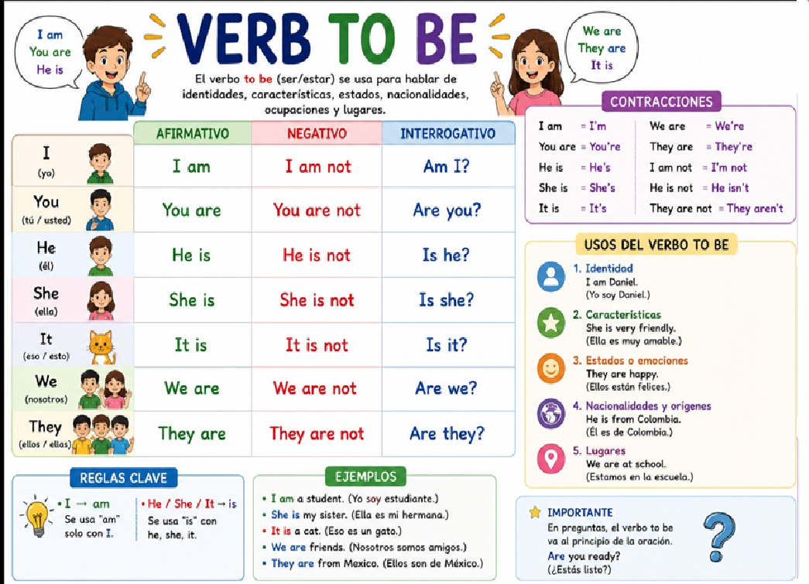
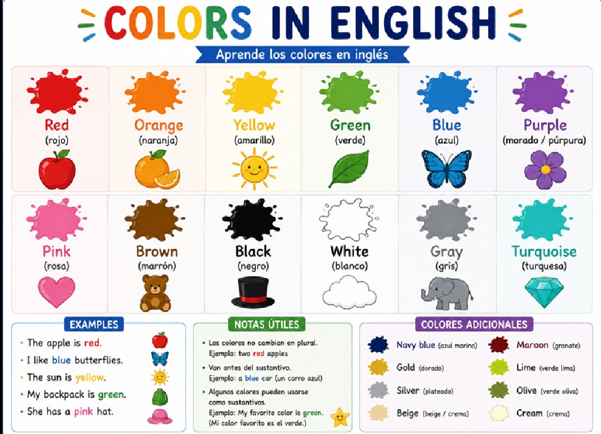
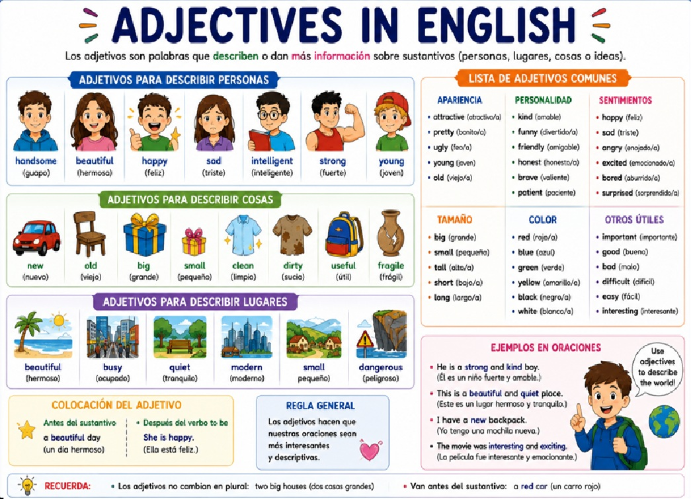

【Breve descripción de lo que aprenderás en esta unidad】
¡Bienvenido a la Unidad 4 de Inglés! Esta es nuestra unidad final del curso. Aquí aprenderemos algo muy importante: las Question Words (palabras interrogativas), también llamadas WH-questions. Estas palabras nos ayudan a hacer preguntas en inglés: ¿Quién? ¿Qué? ¿Dónde? ¿Cuándo? ¿Por qué? ¿Cómo?
Además, haremos un repaso completo de todo lo que hemos aprendido en las unidades anteriores: saludos y presentaciones (Unidad 1), números en inglés y preposiciones de lugar (Unidad 2), y actividades cotidianas (Unidad 3). ¡Así tendremos una visión completa del curso!
En inglés, casi todas las palabras para hacer preguntas comienzan con "Wh-": What, Where, When, Who, Why. Por eso se llaman WH-questions. La única excepción es "How" (cómo), que comienza con H. ¡Pero igual la incluimos en el grupo!
Comprender y utilizar correctamente las Question Words (WH-questions) en inglés para formular preguntas, y repasar y consolidar los temas aprendidos en las tres unidades anteriores del curso de inglés.
Las Question Words son palabras que usamos al inicio de una pregunta para preguntar sobre información específica. En español serían: qué, quién, dónde, cuándo, por qué, cuál y cómo.
| Question Word | Use (Uso) | Traducción |
|---|---|---|
| WHAT | Preguntar por cosas, objetos, acciones, ideas | Qué / Cuál |
| WHERE | Preguntar por lugares, ubicaciones | Dónde |
| WHEN | Preguntar por tiempo, momentos, fechas | Cuándo |
| WHO | Preguntar por personas | Quién / Quiénes |
| WHY | Preguntar por razones, causas, motivos | Por qué |
| WHICH | Preguntar para elegir entre opciones | Cuál / Cuáles |
| HOW | Preguntar por manera, forma, modo, cantidad | Cómo |
Usamos WHAT para preguntar sobre cosas, objetos, acciones, ideas o información general.
| Question | Answer (Respuesta) | Traducción |
|---|---|---|
| What is your name? | My name is Ana. | ¿Cuál es tu nombre? |
| What is this? | It is a book. | ¿Qué es esto? |
| What do you do? | I am a student. | ¿Qué haces? / ¿A qué te dedicas? |
| What time is it? | It is three o'clock. | ¿Qué hora es? |
| What is your favorite color? | My favorite color is blue. | ¿Cuál es tu color favorito? |
Usamos WHERE para preguntar sobre lugares, ubicaciones, direcciones.
| Question | Answer (Respuesta) | Traducción |
|---|---|---|
| Where are you from? | I am from Colombia. | ¿De dónde eres? |
| Where do you live? | I live in Bogotá. | ¿Dónde vives? |
| Where is the cat? | The cat is on the table. | ¿Dónde está el gato? |
| Where is the school? | It is on Main Street. | ¿Dónde está la escuela? |
| Where are you going? | I am going to the park. | ¿A dónde vas? |
Usamos WHEN para preguntar sobre tiempo, momentos, días, fechas.
| Question | Answer (Respuesta) | Traducción |
|---|---|---|
| When is your birthday? | My birthday is in May. | ¿Cuándo es tu cumpleaños? |
| When do you wake up? | I wake up at 6:00 AM. | ¿Cuándo te despiertas? |
| When is the party? | The party is on Saturday. | ¿Cuándo es la fiesta? |
| When do you have English class? | I have English class on Monday. | ¿Cuándo tienes clase de inglés? |
| When did you arrive? | I arrived yesterday. | ¿Cuándo llegaste? |
Usamos WHO para preguntar sobre personas.
| Question | Answer (Respuesta) | Traducción |
|---|---|---|
| Who is she? | She is my sister. | ¿Quién es ella? |
| Who is your teacher? | My teacher is Mr. Smith. | ¿Quién es tu profesor? |
| Who lives here? | My family lives here. | ¿Quién vive aquí? |
| Who is at the door? | It is my friend. | ¿Quién está en la puerta? |
| Who sings that song? | Ed Sheeran sings that song. | ¿Quién canta esa canción? |
Usamos WHY para preguntar sobre razones, causas o motivos. La respuesta generalmente usa BECAUSE (porque).
| Question | Answer (Respuesta) | Traducción |
|---|---|---|
| Why are you late? | Because I missed the bus. | ¿Por qué llegas tarde? |
| Why do you study English? | Because it is important. | ¿Por qué estudias inglés? |
| Why is he sad? | Because he lost his phone. | ¿Por qué está triste él? |
| Why are you happy? | Because it is my birthday! | ¿Por qué estás feliz? |
| Why do you like pizza? | Because it is delicious. | ¿Por qué te gusta la pizza? |
WHICH se usa cuando hay opciones limitadas para elegir. WHAT se usa cuando las opciones son abiertas o ilimitadas.
🔹 Which color do you want? (options: red, blue, green) → opciones limitadas
🔹 What is your favorite color? (any color) → opción abierta
Usamos WHICH cuando hay un conjunto limitado de opciones para elegir.
| Question | Answer (Respuesta) | Traducción |
|---|---|---|
| Which book do you want? | I want the red one. | ¿Cuál libro quieres? |
| Which is your seat? | This one is my seat. | ¿Cuál es tu asiento? |
| Which color do you prefer: blue or green? | I prefer blue. | ¿Cuál color prefieres? |
| Which bus goes to the center? | The number 42 bus. | ¿Cuál autobús va al centro? |
Usamos HOW para preguntar sobre manera, forma, modo, estado o cantidad. ¡HOW tiene muchas combinaciones útiles!
| Question | Answer (Respuesta) | Traducción |
|---|---|---|
| How are you? | I am fine, thank you. | ¿Cómo estás? |
| How do you go to school? | I go by bus. | ¿Cómo vas a la escuela? |
| How old are you? | I am twelve years old. | ¿Cuántos años tienes? |
| How many books do you have? | I have five books. | ¿Cuántos libros tienes? |
| How much is this? | It is ten dollars. | ¿Cuánto cuesta esto? |
| How often do you exercise? | I exercise every day. | ¿Con qué frecuencia haces ejercicio? |
| Question Word | Use (Uso) | Example (Ejemplo) | Traducción |
|---|---|---|---|
| WHAT | Cosas, objetos, información | What is your name? | ¿Cuál es tu nombre? |
| WHERE | Lugares, ubicaciones | Where do you live? | ¿Dónde vives? |
| WHEN | Tiempo, fechas, momentos | When is your birthday? | ¿Cuándo es tu cumpleaños? |
| WHO | Personas | Who is your teacher? | ¿Quién es tu profesor? |
| WHY | Razones, causas, motivos | Why are you happy? | ¿Por qué estás feliz? |
| WHICH | Opción entre posibilidades limitadas | Which color do you prefer? | ¿Cuál color prefieres? |
| HOW | Modo, manera, cantidad, estado | How are you? | ¿Cómo estás? |
A continuación, un repaso de todo lo que hemos aprendido en las unidades anteriores. ¡Es importante recordar y practicar todo!

Números en inglés (Numbers):
Preposiciones de lugar (IN, ON, AT):
| Preposition | Use (Uso) | Examples (Ejemplos) |
|---|---|---|
| IN | Dentro de / en espacios cerrados, ciudades, países | in the room, in Bogotá, in Colombia, in the pool |
| ON | Sobre superficies, calles, pisos, transporte público | on the table, on 5th Street, on the bus, on TV |
| AT | En puntos específicos, direcciones exactas, eventos | at the door, at 25 Oak St, at the party, at home |
Ejemplo: The book is on the table. She lives in New York. He is at the bus stop.


Escoge la question word correcta (What, Where, When, Who, Why, Which, How):
Relaciona cada pregunta con su respuesta correcta:
Answers: A. I am from Colombia. / B. I study because I like it. / C. My name is Sofia. / D. I am fine, thanks. / E. I wake up at 6:00 AM. / F. My teacher is Mrs. García.
Escribe una pregunta usando la question word indicada:
Completa el diálogo con las question words correctas:
Ana: Hello! _________ is your name?
Tom: My name is Tom. And you?
Ana: I am Ana. _________ are you from?
Tom: I am from Mexico. And you?
Ana: I am from Colombia. _________ old are you?
Tom: I am thirteen years old. _________ do you go to school?
Ana: I go to school by bus. _________ is your favorite subject?
Tom: My favorite subject is English. _________ do you like English?
Ana: I like English because it is fun! _________ is your English teacher?
Tom: My English teacher is Mr. Smith.